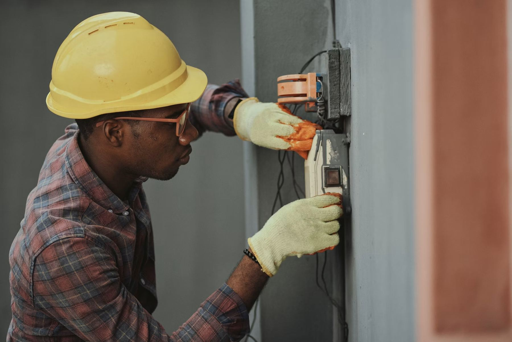
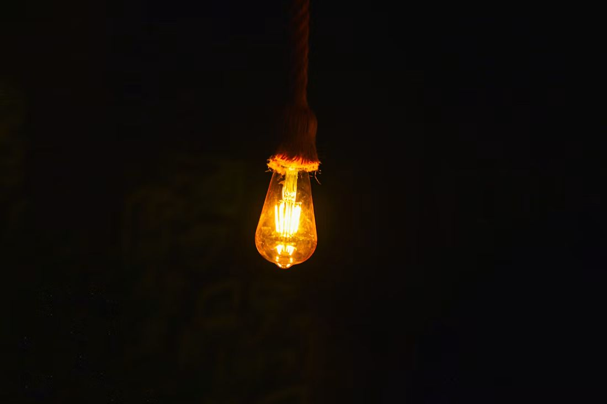
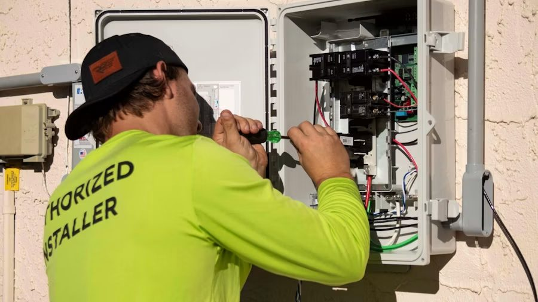
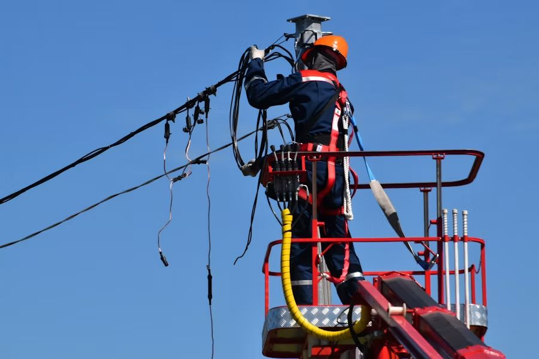
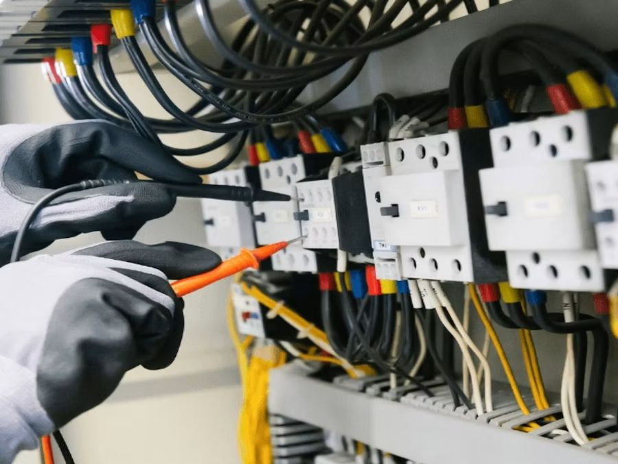

Avisos resueltos desde que abrimos la primera guardia nocturna.
15.000
Guardia activa ahora · 24 h / 365 días
Confirmamos un técnico en 60 segundos
Corte de luz, cortocircuito u olor a quemado. Guardia activa las 24 horas con precio cerrado antes de tocar un cable. Al otro lado del teléfono contesta una persona.
Llamar ahora Enviar ubicación por WhatsApp
4,8/5 en más de 1.200 valoraciones verificadas
01 — Quiénes somos
Luz & calma,
Una avería eléctrica no tiene por qué convertirse en una noche de nervios. Respondemos en un minuto, cerramos el precio antes de empezar y dejamos la garantía por escrito.

Segundos de media entre tu llamada y saber qué técnico viene.
60Valoración media sobre más de 1.200 opiniones verificadas.
4,8Precio cerrado antes de tocar un cable. Lo que se acuerda por teléfono es lo que se paga.
Ver cómo trabajamos02 — Urgencias
Si te pasa esto ahora, es nuestro trabajo.
No hace falta que sepas qué es. Descríbelo por teléfono y nosotros nos ocupamos.
-
Cortocircuito repentino
Chispas, ruido o apagón instantáneo en toda la casa.
Riesgo alto -
El diferencial salta y no vuelve
Restableces la luz y se corta otra vez a los pocos segundos.
-
Apagón solo en tu vivienda
El resto del edificio o la calle tiene luz; tu casa, no.
-
Olor a quemado o plástico fundido
Señal de riesgo real. Cortamos el suministro y localizamos el origen.
Riesgo alto -
Avería en cuadro industrial
Tu negocio se ha parado y cada hora cuesta dinero.
-
Instalación que da calambre
Un enchufe o interruptor que «pica» al tocarlo. No esperes.
03 — Cómo trabajamos
Tres pasos, nada más.
De la llamada a la reparación, sin sorpresas por el camino.
-
Llamas o compartes tu ubicación
Un botón de llamada o WhatsApp. Nos das la dirección y el problema en una frase.
-
Un técnico confirma en 60 segundos
Te decimos quién viene y a qué hora, por SMS o WhatsApp.
-
Repara y te deja garantía por escrito
Presupuesto cerrado, trabajo hecho y papel en mano.
04 — Técnicos
Sabes exactamente quién entra en tu casa.
Antes de asignar un aviso comprobamos tres cosas. No mandamos a cualquiera a tocar tu instalación.
- Licencia de instalador eléctrico vigente y verificada.
- Seguro de responsabilidad civil activo en cada intervención.
- Historial de valoraciones real de avisos anteriores.
05 — Lo que reparamos
Del enchufe de casa al cuadro de una nave.



días al año de guardia, festivos y madrugadas incluidos.
06 — La diferencia
La diferencia se nota a las 3 de la madrugada.
| Lo que importa | Electro Rápido 24h | Un electricista cualquiera |
|---|---|---|
| Respuesta | Confirmación en 60 segundos | Te devuelve la llamada cuando puede |
| Horario | Guardia real los 365 días | Solo en horario comercial |
| Presupuesto | Cerrado por adelantado | Crece sobre la marcha |
| Técnico | Licenciado y asegurado | Difícil de verificar |
| Garantía | Por escrito | De palabra |
07 — Opiniones
Lo que dicen quienes ya nos llamaron.
4,8 de media en más de 1.200 valoraciones verificadas.
02:14 · Corte de luz
Se saltó el diferencial de madrugada con mi hija de dos años en casa. Confirmaron técnico en menos de un minuto y nos dejaron todo funcionando sin sustos.
Marta G. — Vivienda particular
Domingo · Cuadro comercial
Se nos quemó el cuadro del local antes de abrir. Precio cerrado por teléfono, sin rodeos, y en un rato ya estábamos facturando otra vez.
Javier R. — Negocio local
23:40 · Olor a quemado
Olía a quemado en el pasillo un viernes por la noche. Llegaron rapidísimo y con la tranquilidad de saber que eran profesionales certificados.
Laura M. — Vivienda particular
Cada minuto con un cable suelto es un riesgo.
Nuestros técnicos de guardia están disponibles ahora. Cuéntanos qué pasa y confirmamos respuesta en 60 segundos.
08 — Preguntas frecuentes
Lo que todo el mundo pregunta.
¿No encuentras tu duda? Llámanos y te lo explicamos en un minuto.
¿Cuánto cuesta una intervención de noche o en fin de semana?
El precio se comunica y se cierra contigo antes de intervenir, tanto de día como de noche o festivos. No aplicamos recargos ocultos: lo que se acuerda por teléfono es lo que se paga.
¿En qué zonas tenéis cobertura?
Al compartir tu ubicación o código postal te confirmamos al instante si tienes cobertura de respuesta en 60 segundos.
¿Qué métodos de pago aceptáis?
Efectivo, tarjeta y transferencia inmediata. El técnico lleva datáfono móvil, así que no necesitas tener efectivo en casa.
¿Es de fiar el electricista que va a venir a mi casa?
Todos nuestros técnicos son licenciados, certificados y están asegurados. Te confirmamos el nombre del técnico asignado antes de que llegue.
¿Qué pasa si el problema no se resuelve en la primera visita?
El técnico te lo explica en el momento, con presupuesto cerrado para cualquier trabajo adicional. No tienes obligación de aceptarlo en el acto.
¿De verdad tardáis solo 60 segundos?
Ese es el tiempo de confirmación: te decimos qué técnico viene y a qué hora llega. El tiempo de llegada física depende de tu ubicación.